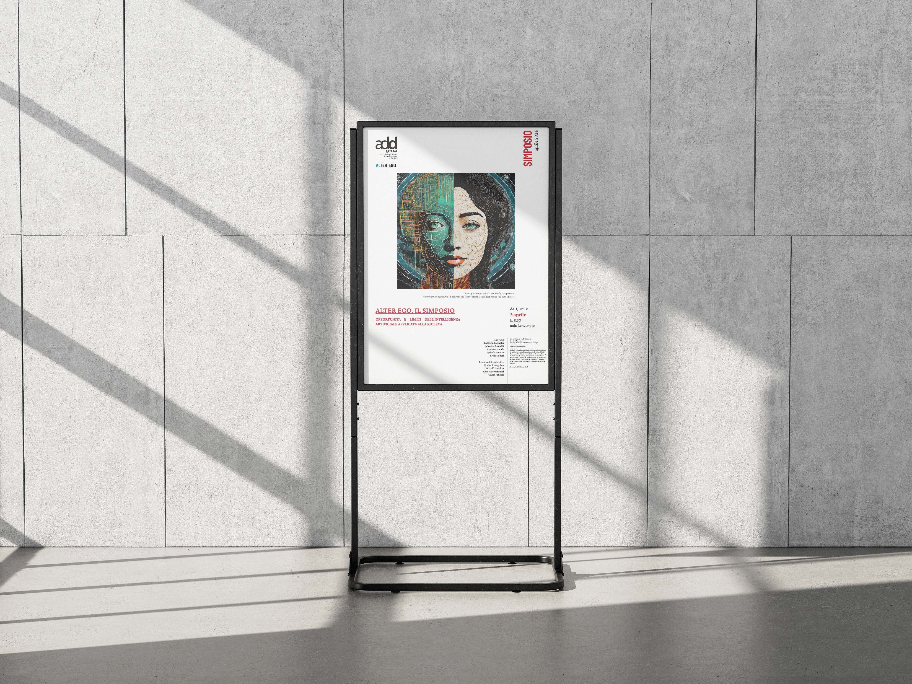
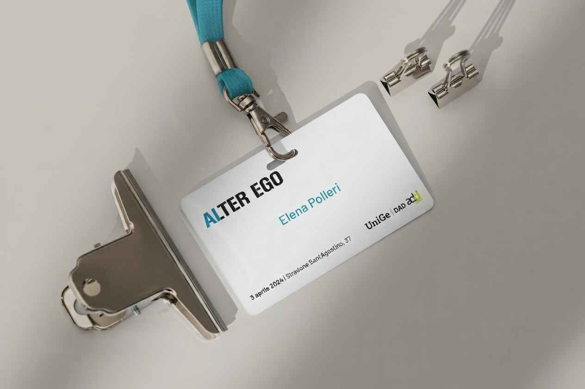
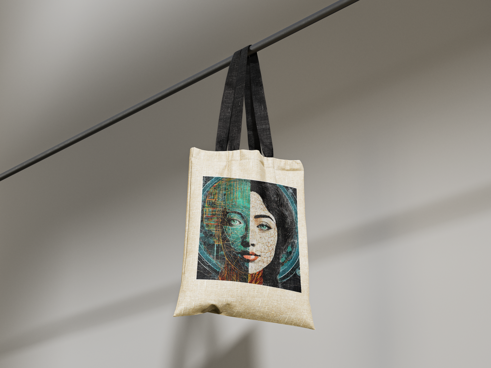
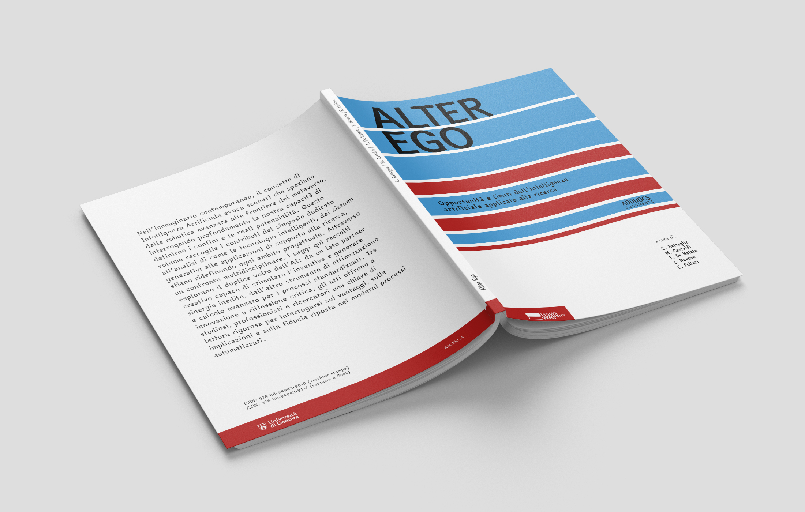

Designing for dissemination
Directing a National PhD Symposium: From Scientific Curation and Peer Review to Event Production and Editorial Publishing.
Setting the Stage: The Vision & The Brief
How do we navigate the boundary between human creativity and automated algorithms? Alter Ego was born as a national-level symposium designed specifically for the PhD and student community, aiming to dissect the opportunities and limitations of Artificial Intelligence applied to research.
As a core member of the organizing committee at the Department of Architecture and Design (DAD) of the University of Genoa, my mission was acting as the operational and scientific director of the initiative. The challenge required orchestrating a complex machinery: shaping the call for contributions, setting up rigorous selection mechanisms, coordinating high-profile keynote speakers, and managing physical event production from scratch.

Curating the Core: Scientific Governance & Guest Management
An academic event lives or dies by its scientific rigor. I personally oversaw the entire submission lifecycle: managing incoming proposals, coordinating a transparent double-blind peer review process across three distinct thematic tracks, and ensuring timely communication with participants.
Alongside academic governance, I managed relations with our keynote speakers, curating the talks of Matteo Massaroli (exploring AI and the metaverse) and Giacinto Barresi (focusing on human-centric AI challenges for designers), aligning their insights with the overarching theme of the symposium.
Bringing it to Life: Event Operations & Brand Experience
Beyond the papers, a successful symposium requires flawless on-site execution and a cohesive physical touchpoint system. I directed the day-of operations at DAD UniGe—handling spatial flow, welcoming attendees, moderating sessions, and coordinating catering logistics and coffee breaks to foster natural networking among young researchers.
To elevate the participant experience, I also supervised the production of tailored event merchandise and identification assets, ensuring every physical detail resonated with the innovative tone of Alter Ego.


The Legacy: Editorial Direction & Impact
The symposium successfully transformed into a vibrant national hub for cross-disciplinary discussion, uniting dozens of PhD candidates and senior academics around the future of human-AI synergy in design and research.
The project's ultimate milestone was the complete editorial coordination and publishing of the conference proceedings. By turning raw papers and live debates into a permanent, structured volume, I ensured that the intellectual value generated during the event outlived the single day of conference.
